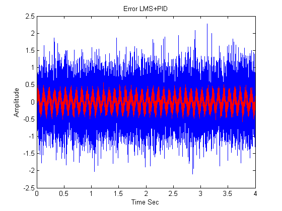

Contents
Matlab initialization.
Clearing all signals and plots
clc clear all close all TRUE = 1; FALSE = 0; load Wz.mat
Global variable initializations
%Initialising signal attributes and control signals Fn = 10; % Frequency of noise required Time = 4; % Total time of the sample signal to process in Sec Fs = 4000; % Sampling frequency Ts = 1/Fs; % Sampling time FiltOrder = 128; % Filter order t = 0:Ts:Time-Ts; % Sampling agent SigSize = length(t); % Signal size for testing mu = 0.02; % Adaptive algorithm coefficient. Control = [1 2]; % 1 = LMS, 2 = LMS+PID, 3 = FxLMS, 4 = FxLMS + PID AntiPhaseF = 0.5; % Anti - phase factor %Wz = (0.05*(0:FiltOrder-1)).^2;% Initial filter coefficients ; ones(1,FiltOrder); %Generic session control DisplayPrimary = FALSE; % Display primary signal and noise. 1 = show, 0 = do not show DisplayPrimDiffSig = FALSE; % Display signal difference between signal and noise. SigAntiphase = FALSE; % Primary signal is added with anti - phase of primary noise SigPrediction = FALSE; % Primary future error will predict based on history
Generate the Primary signal ( Audio signal )
This is the model sigal coming from Audio device
PrimSig = 0.2 * ( 2*wgn(1,SigSize,0) + randn(1,SigSize)); DesiredSig = PrimSig; if DisplayPrimary == TRUE figure plot(t,PrimSig) title('Primary signal');xlabel('Time Sec');ylabel('Amplitude'); end
Generate the Primary noise signal
This is the model sigal coming from primary noise microphone
PrimNoise = 0.015 * ( 3.8 * wgn(1,SigSize,0) + 5 * randn(1,SigSize) + 15*sin(2*pi*t*Fn)); if DisplayPrimary == TRUE figure plot(t,PrimNoise) title('Noise signal');xlabel('Time Sec');ylabel('Amplitude'); end
Generate the difference of noise with primary signal
For visual inspection
PrimDiffSig = PrimSig - PrimNoise; if DisplayPrimDiffSig == TRUE figure plot(t,PrimSig, 'b'); hold on plot(t,PrimDiffSig, 'g'); hold off end
%Primary signal needs to pass through many electronic components so require %a transfer function ( H ) multiplication to find the desired signal Tf_num = [8 18 32]; Tf_den = [2 6 14 56]; H = tf(Tf_num, Tf_den, Fs);
ANC implementation
Based on control signal various options will be enabled.
% Anti phase signal if SigAntiphase == TRUE PrimSig = PrimSig - AntiPhaseF * PrimNoise; end % Initialse buffer e = zeros(1, SigSize); % Initialise error to zero Signal = [zeros(1,FiltOrder),PrimSig + PrimNoise]; % Make signal length depend on filter order for calculation for i = 1:length(Control) for n = 1:SigSize %Reversing the signal. Need to treat latest signal value with the %leftmost coeffient SigVector = Signal( n +FiltOrder -1 : -1 : n); e(n) = DesiredSig(n) - Wz * SigVector'; % Update the error Wz = Wz + mu * SigVector * e(n); end % Quality of the filter is to produce the minimum average error Q = mean(abs(e)); % Display the output if Control(i) == 1 fprintf('Quality of LMS filter is = %d.\n',Q); plot(t,e); title('Error LMS');xlabel('Time Sec');ylabel('Amplitude'); hold on plot(t,PrimNoise, 'r'); hold off end if Control(i) == 2 fprintf('Quality of LMS+PID filter is = %d.\n',Q); plot(t,e); title('Error LMS+PID');xlabel('Time Sec');ylabel('Amplitude'); hold on plot(t,PrimNoise, 'r'); hold off end if Control(i) == 3 fprintf('Quality of FxLMS+PID filter is = %d.\n',Q); plot(t,e); title('Error FxLMS');xlabel('Time Sec');ylabel('Amplitude'); end if Control(i) == 4 fprintf('Quality of FxLMS+PID filter is = %d.\n',Q); plot(t,e); title('Error FxLMS+PID');xlabel('Time Sec');ylabel('Amplitude'); end end
Quality of LMS filter is = 4.293388e-01. Quality of LMS+PID filter is = 4.295029e-01.